AI Daily · 2026-10-30 · Sources
中文 · English · Overview / 总览
- S01 Confetti product and maker launchDate not stated
- S02 October29 featured launches2026-10-29
- S03 Confetti company and maker accountDate not stated
- S04 Confetti original launchDate not stated
- S05 Confetti websiteDate not stated
- S06 AI furniture benchmark2026-10-27
- S07 Benchmark protocol2026-10-26
- S08 Recorded photo-to-cut-list session2026-10-28
- S09 AI furniture design2026-10-27
- S10 Fabivo workshop planning2026-08-23
- S11 Furniture assembly instructions2026-08-23
- S12 Fabivo privacy policy2026-10-28
- S13 Fabivo source repositoryDate not stated
- S14 Show HN: FabivoDate not stated
- S15 Zwift Plus productDate not stated
- S16 Zwift Plus launch and beta use2026-10-29
- S17 Zwift Plus launch coverage2026-10-29
- S18 Zwift pricingDate not stated
- S19 Zwift launches Zwift Plus2026-10-29
- S20 Glasses2 product capabilitiesDate not stated
- S21 Glasses2 October27 launch account2026-10-27
- S22 Rokid three-device launch report2026-10-27
- S23 Glasses2 launch report2026-10-28
- S24 Rokid second generation and Color2026-10-29
- S25 XREAL AURA launch2026-10-28
- S26 AURA US specifications and orderingDate not stated
- S27 AURA Japan ordering and features2026-10-29
- S28 AURA content development service2026-10-29T11:11:00+09:00
- S29 Stable181 release notes2026-10-26
- S30 How Matic sees and cleansDate not stated
- S31 VClip READMEDate not stated
- S32 VClip maker technical article in repositoryDate not stated
- S33 VClip changelog2026-10-29
- S34 VClip installation guideDate not stated
- S35 VClip releases indexDate not stated
- S36 VClip pre-cutoff documentation commit2026-10-29T15:29:36Z
- S37 Maker publication2026-10-29
- S38 Getting started with AI Agent and AI Action assist2026-10-28
- S39 Welcome to IFTTT.ai2026-10-28
- S40 IFTTT plansDate not stated
- S41 AI Agent serviceDate not stated
- S42 IFTTT maker launch and replyDate not stated
- S43 release2026-10-28
- S44 mask2026-10-28
- S45 rig2026-10-28
- S46 blend2026-10-28
- S47 export2026-10-28
- S48 repoDate not stated
- S49 redditDate not stated
- S50 Coucou 0.5.5 release2026-10-29
- S51 Sessions apart behind each client pillDate not stated
- S52 Concurrent questions on notch and iPhoneDate not stated
- S53 Remote hook relay2026-10-22
- S54 Coucou repositoryDate not stated
- S55 Coucou official product siteDate not stated
- S56 Survival LLM0.4.02026-10-29
- S57 Survival LLM0.4.12026-10-29
- S58 Switch installed library packs2026-10-25
- S59 Different path for Library2026-10-27
- S60 Model Download Issue2026-10-28
- S61 Settings not opening on first launch2026-10-29
- S62 Survival LLM architecture and setupDate not stated
- S63 Product and update notesDate not stated
- S64 An AI Chatbot For The Apocalypse2026-10-29
- S65 Edit and preview documents directly in Gemini2026-10-29T16:15:00Z
- S66 Upload and analyze filesDate not stated
- S67 Generate files in Gemini2026-04-29
- S68 Use Gemini AppsDate not stated
- S69 Create, preview, and edit files directly in Gemini2026-10-29
- S70 Floot in ChatGPT launch2026-10-29
- S71 Build from Claude & ChatGPTDate not stated
- S72 Your project viewDate not stated
- S73 Publishing your appDate not stated
- S74 Build actionsDate not stated
- S75 WeKnora v0.9.0 release2026-10-29
- S76 WeKnora assistant2026-10-29
- S77 Automations2026-10-29
- S78 Execution permissions and approvals2026-10-29
- S79 Version0.9.0 release guide2026-10-29
- S80 Introducing Replica2026-10-28
- S81 Replica READMEDate not stated
- S82 Create your first local prototypeDate not stated
- S83 Set up shared hosting and team feedbackDate not stated
- S84 Copilot code review: Max and approvals2026-10-28
- S85 Configuring code review by GitHub CopilotDate not stated
- S86 Agent Merge watches and fixes pull requests in the cloud2026-10-28
- S87 Getting pull requests ready to merge with Agent MergeDate not stated
- S88 Intrascope 2.0 launch2026-10-29
- S89 Intrascope productDate not stated
- S90 Get startedDate not stated
- S91 AI Cost ManagementDate not stated
- S92 Shared AI ContextDate not stated
- S93 Release date and included changes2026-10-29
- S94 Question-only optional-resource investigation request2026-10-28
- S95 Agent-specific login check and unknown handling2026-10-28
- S96 Three-run capacity, stop/open and preserve original request2026-10-28
- S97 Verdict prominence, uncertainty and stale assessment labels2026-10-29
- S98 Exact single-Pod citation binding and failure labels2026-10-28
- S99 Existing-agent requirements, execution profiles, model-provider data and repair approvalDate not stated
- S100 AWS October29 announcement2026-10-29
- S101 Step Functions integration tutorialDate not stated
- S102 AgentCore connector operationsDate not stated
- S103 Microsoft October28 announcement2026-10-28
- S104 Foundry harness developer guideDate not stated
- S105 Hosted-agent resilience guideDate not stated
- S106 ronny0.2.5 context audit update2026-10-29
- S107 MCode Stack READMEDate not stated
- S108 Context Tax Audit2026-10-29
- S109 Long Command CheckDate not stated
- S110 Independent ReviewDate not stated
- S111 Hand-off DocDate not stated
- S112 Clover model card2026-10-28
- S113 Clover release commit history2026-10-28
- S114 Clover code and backendsDate not stated
- S115 Clover launch and demonstrationsDate not stated
- S116 Clover native serving PR469272026-10-28
- S117 Clover support PR313062026-10-28
- S118 AGIBOT Innovation Day2026-10-29
- S119 Worken and Innovation Day release2026-10-29T09:33:00Z
- S120 Innovation Day report2026-10-29
- S121 AGIBOT technical launch account2026-10-29
- S122 GO3 launch report2026-10-29
- S123 GraspPressure submission history2026-10-29T06:33:15Z
- S124 GraspPressure full paper2026-10-29T06:33:15Z
- S125 InterA11y submission history2026-10-29T06:51:21Z
- S126 InterA11y full paper2026-10-29T06:51:21Z
- S127 Lookover submission history2026-10-29T04:55:05Z
- S128 Lookover full paper2026-10-29T04:55:05Z
- S129 HAIDL-X submission history2026-10-29T13:23:54Z
- S130 HAIDL-X full paper2026-10-29T13:23:54Z
- S131 The As-If Machine submission history2026-10-23T21:11:11Z
- S132 The As-If Machine full paper2026-10-23T21:11:11Z
- S133 Adaptive Psychomotor Tutor submission history2026-10-24T05:43:40Z
- S134 Adaptive Psychomotor Tutor full paper2026-10-24T05:43:40Z
Confetti
2026-10-29 · near-three-day · Original vendor documentation and separately identified first-person evidence where stated; no editorial hands-on test
S01 — https://www.producthunt.com/products/confetti-5 · S04 — https://www.ycombinator.com/launches/Wb2-confetti-build-hardware-projects-using-plain-english-prompts · S03 — https://www.ycombinator.com/companies/confetti · S02 — https://www.producthunt.com/leaderboard/daily/2026/10/29
Fabivo
2026-10-26 · seven-day · startup signal; maker demonstration and internal comparison, no physical build or independent test
S09 — https://www.fabivo.app/en/ai-furniture-design · S10 — https://www.fabivo.app/en · S11 — https://www.fabivo.app/en/furniture-assembly-instructions · S06 — https://www.fabivo.app/en/ai-furniture-benchmark · S07 — https://www.fabivo.app/showcase/benchmark/protocol.json · S08 — https://www.fabivo.app/en/video/photo-to-cut-list · S13 — https://github.com/Superpapotas/Fabivo · S12 — https://www.fabivo.app/privacy
Zwift Plus
2026-10-29 · near-three-day · Original vendor documentation and separately identified first-person evidence where stated; no editorial hands-on test
S15 — https://www.zwift.com/zwift-plus · S16 — https://zwiftinsider.com/zwift-plus-launch/ · S19 — https://www.bicycleretailer.com/announcements/2026/10/29/zwift-launches-zwift-plus-subscription-zwifters-who-want-more · S17 — https://www.wareable.com/cycling/zwift-plus-premium-subscription-tier-adaptive-coaching-video-routes · S18 — https://www.zwift.com/pricing
Rokid Glasses 2
2026-10-27 · seven-day · Original vendor documentation and separately identified first-person evidence where stated; no editorial hands-on test
S20 — https://www.rokid.com/zh-CN/products/glasses-2 · S21 — https://openrokid.csdn.net/6ae0757640858c2d8816b6c1.html · S22 — https://finance.sina.com.cn/cj/2026-10-27/doc-iniwsfqt1325644.shtml · S23 — https://www.notebookcheck.net/Rokid-Glasses-2-launch-with-upgraded-design-bigger-battery-and-Dolby-Audio-support.1435436.0.html · S24 — https://www.wareable.com/wearable-tech/rokid-glasses-2-color-ring-announcement-international-availability
XREAL AURA
2026-10-28 · near-three-day · Original vendor documentation and separately identified first-person evidence where stated; no editorial hands-on test
S25 — https://blog.google/products-and-platforms/platforms/android/xreal-aura/ · S27 — https://www.watch.impress.co.jp/docs/news/2152300.html · S26 — https://us.shop.xreal.com/products/xreal-aura · S28 — https://prtimes.jp/main/html/rd/p/000000068.000023466.html
Matic Stable 181
2026-10-26 · seven-day · Original vendor documentation and separately identified first-person evidence where stated; no editorial hands-on test
S29 — https://maticrobots.com/blog/matic-release-notes · S30 — https://maticrobots.com/innovation
VClip v0.3.4
2026-10-29 · near-three-day · Original source documentation and maker screenshots; no local execution or independently tested throughput
S31 — https://github.com/wyfirstname/videoclip/blob/9b0397caad6ea675f5dc885766de753de3e3a141/README.md · S32 — https://github.com/wyfirstname/videoclip/blob/9b0397caad6ea675f5dc885766de753de3e3a141/docs/BLOG.md · S33 — https://github.com/wyfirstname/videoclip/blob/9b0397caad6ea675f5dc885766de753de3e3a141/CHANGELOG.md · S34 — https://github.com/wyfirstname/videoclip/blob/9b0397caad6ea675f5dc885766de753de3e3a141/docs/INSTALL.md
IFTTT.ai
2026-10-28 · near-three-day · confirmed product / startup signal; vendor documentation, not independent hands-on test
S38 — https://ifttt.com/explore/ai-agent-ai-action-assist · S41 — https://ifttt.com/ai_agent · S39 — https://ifttt.com/explore/welcome_to_ifttt · S40 — https://ifttt.com/plans · S42 — https://www.producthunt.com/products/ifttt
StableGen 0.4.0
2026-10-28 · near-three-day · Dated release and official workflow documentation; author Reddit demonstration, not independent test
S46 — https://github.com/sakalond/StableGen/wiki/Blending-and-projection · S43 — https://github.com/sakalond/stablegen/releases/tag/v0.4.0 · S44 — https://github.com/sakalond/StableGen/wiki/Masked-Edit · S45 — https://github.com/sakalond/StableGen/wiki/Rigging-and-animation · S47 — https://github.com/sakalond/StableGen/wiki/Export · S49 — https://www.reddit.com/r/StableDiffusion/comments/1xiolct/qwen_image_21_trellis2_in_blender_from_a_prompt/ · S48 — https://github.com/sakalond/StableGen
Coucou 0.5.5
2026-10-29 · near-three-day · developer surface; release notes and contributor implementation/testing reports, not independent editorial test
S51 — https://github.com/Louis-CFM/coucou/pull/878 · S52 — https://github.com/Louis-CFM/coucou/pull/877 · S50 — https://github.com/Louis-CFM/coucou/releases/tag/v0.5.5 · S53 — https://github.com/Louis-CFM/coucou/pull/875 · S54 — https://github.com/louis-cfm/coucou
Survival LLM 0.4.0–0.4.1
2026-10-29 · near-three-day · confirmed release / community friction; four individual issue reports and maintainer fixes, not independent retest or medical evaluation
S58 — https://github.com/anonnerdfrenzy/survival-llm/issues/4 · S56 — https://github.com/anonnerdfrenzy/survival-llm/releases/tag/v0.4.0 · S59 — https://github.com/anonnerdfrenzy/survival-llm/issues/9 · S62 — https://github.com/anonnerdfrenzy/survival-llm/blob/main/README.md · S60 — https://github.com/anonnerdfrenzy/survival-llm/issues/13 · S61 — https://github.com/anonnerdfrenzy/survival-llm/issues/17 · S57 — https://github.com/anonnerdfrenzy/survival-llm/releases/tag/v0.4.1 · S63 — https://www.brangus.io/survival-llm · S64 — https://hackaday.com/2026/10/29/an-ai-chatbot-for-the-apocalypse/
Gemini app file editing
2026-10-29T16:15:00Z · main · confirmed product; original vendor announcement and documentation, not independent testing
S65 — https://blog.google/innovation-and-ai/products/gemini-app/edit-files-directly/ · S66 — https://support.google.com/gemini/answer/14903178?co=GENIE.Platform%3DDesktop&hl=en · S67 — https://blog.google/innovation-and-ai/products/gemini-app/generate-files-in-gemini/ · S68 — https://support.google.com/gemini/answer/13275745?co=GENIE.Platform%3DDesktop&hl=en
Floot in ChatGPT
2026-10-29 · near-three-day · confirmed product; original vendor announcement and documentation, not independent testing
S70 — https://www.producthunt.com/products/floot · S02 — https://www.producthunt.com/leaderboard/daily/2026/10/29 · S71 — https://floot.com/docs/integrations/build-from-claude-and-chatgpt · S72 — https://floot.com/docs/getting-started/editor-and-preview · S73 — https://floot.com/docs/projects/publishing · S74 — https://floot.com/docs/integrations/build-actions
WeKnora 0.9.0
2026-10-29T06:59:12Z · near-three-day · Tagged official release and documentation; vendor-authored behavior, not independent hands-on test
S76 — https://github.com/Tencent/WeKnora/blob/v0.9.0/website-docs/03-features/26-weknora-assistant.md · S77 — https://github.com/Tencent/WeKnora/blob/v0.9.0/website-docs/03-features/27-automations.md · S78 — https://github.com/Tencent/WeKnora/blob/v0.9.0/website-docs/03-features/28-agent-permissions.md · S79 — https://github.com/Tencent/WeKnora/blob/v0.9.0/website-docs/07-releases/v0.9.0.md
Replica
2026-10-28 · near-three-day · confirmed product; original vendor announcement and documentation, not independent testing
S80 — https://github.blog/changelog/2026-10-28-introducing-replica-an-open-source-ai-prototyping-tool/ · S81 — https://github.com/github/replica · S82 — https://github.com/github/replica/blob/main/docs/local-prototyping.md · S83 — https://github.com/github/replica/blob/main/docs/prototype-environment.md
GitHub Copilot pull requests
2026-10-28 · near-three-day · confirmed product; original vendor announcement and documentation, not independent testing
S84 — https://github.blog/changelog/2026-10-28-copilot-code-review-merge-with-confidence-with-max-and-approvals/ · S85 — https://docs.github.com/en/copilot/how-tos/copilot-on-github/set-up-copilot/configure-code-review · S86 — https://github.blog/changelog/2026-10-28-agent-merge-watches-and-fixes-pull-requests-in-the-cloud/ · S87 — https://docs.github.com/en/copilot/how-tos/copilot-on-github/use-copilot-agents/watch-and-fix-pull-requests
Intrascope 2.0
2026-10-29 · near-three-day · confirmed product; original vendor announcement and documentation, not independent testing
S88 — https://www.producthunt.com/products/intrascope-app · S89 — https://intrascope.app/ · S02 — https://www.producthunt.com/leaderboard/daily/2026/10/29 · S90 — https://intrascope.app/intrascope-ai-get-started · S92 — https://intrascope.app/shared-ai-context · S91 — https://intrascope.app/ai-cost-management
Radar 1.19.0
2026-10-29 · near-three-day · Dated release, original PR descriptions and maintainer test reports; no independent cluster execution
S94 — https://github.com/skyhook-io/radar/pull/2396 · S93 — https://github.com/skyhook-io/radar/releases/tag/v1.19.0 · S95 — https://github.com/skyhook-io/radar/pull/2420 · S96 — https://github.com/skyhook-io/radar/pull/2419 · S97 — https://github.com/skyhook-io/radar/pull/2431 · S98 — https://github.com/skyhook-io/radar/pull/2392 · S99 — https://github.com/skyhook-io/radar
AWS Step Functions × AgentCore Gateway
2026-10-29 · near-three-day · Original vendor documentation; not independently executed
S100 — https://aws.amazon.com/about-aws/whats-new/2026/10/step-functions-workflows-ai-agent-tools/ · S101 — https://docs.aws.amazon.com/step-functions/latest/dg/tutorial-agentcore-gateway.html · S102 — https://docs.aws.amazon.com/bedrock-agentcore/latest/devguide/gateway-target-connector-step-functions.html
Microsoft Copilot harness in Foundry
2026-10-28 · near-three-day · Original vendor documentation; not independently executed
S103 — https://devblogs.microsoft.com/foundry/microsoft-copilot-harness-in-foundry/ · S104 — https://learn.microsoft.com/en-us/azure/foundry/agents/how-to/use-tools-skills-copilot-harness · S105 — https://learn.microsoft.com/en-us/azure/foundry/agents/concepts/long-running-agent-resilience
MiniMax MCode Stack
2026-10-29T14:24:27Z · main · Maintainer repository and skill contents; procedures documented, no installed or benchmarked result
S106 — https://github.com/MiniMax-AI/mcode-stack/commit/49a3ff4dfd1aa159c8a84579f3ac0ce38e1aaa6d · S108 — https://github.com/MiniMax-AI/mcode-stack/blob/49a3ff4dfd1aa159c8a84579f3ac0ce38e1aaa6d/stacks/ronny/skills/context-tax-audit/SKILL.md · S109 — https://github.com/MiniMax-AI/mcode-stack/blob/49a3ff4dfd1aa159c8a84579f3ac0ce38e1aaa6d/stacks/ronny/skills/long-command-check/SKILL.md · S107 — https://github.com/MiniMax-AI/mcode-stack/blob/49a3ff4dfd1aa159c8a84579f3ac0ce38e1aaa6d/README.md · S110 — https://github.com/MiniMax-AI/mcode-stack/blob/49a3ff4dfd1aa159c8a84579f3ac0ce38e1aaa6d/stacks/ronny/skills/independent-review/SKILL.md · S111 — https://github.com/MiniMax-AI/mcode-stack/blob/49a3ff4dfd1aa159c8a84579f3ac0ce38e1aaa6d/stacks/ronny/skills/handoff-doc/SKILL.md
Clover-35B-A3B-Preview
2026-10-28 · near-three-day · Original model card, repository and author demos; benchmark numbers are vendor claims
S112 — https://huggingface.co/Diffuspace/Clover-35B-A3B-Preview · S114 — https://github.com/DiffuSpace/Clover-35B-A3B-Preview · S115 — https://diffuspace.ai/blog/clover-35b/ · S116 — https://github.com/sgl-project/sglang/pull/46927 · S117 — https://github.com/ggml-org/llama.cpp/pull/31306
AGIBOT G2 Max / Link-U OS
2026-10-29T09:33:00Z · main · Original vendor documentation and separately identified first-person evidence where stated; no editorial hands-on test
S118 — https://www.agibot.com/article/231/detail/131.html · S119 — https://www.prnewswire.com/news-releases/agibot-introduces-worken-to-measure-productive-robot-work-at-agibot-innovation-day-2026-302923486.html · S120 — https://www.sohu.com/a/1094485628_118792 · S121 — https://k.sina.com.cn/article_5952915720_162d24908067052wva.html?from=tech · S122 — https://www.sohu.com/a/1094307503_115865
GraspPressure
2026-10-29T06:33:15Z · near-three-day · research signal; author implementation and evaluation, not independent product testing
S124 — https://arxiv.org/html/2610.39459v1
InterA11y
2026-10-29T06:51:21Z · near-three-day · research signal; author implementation and evaluation, not independent product testing
S126 — https://arxiv.org/html/2610.39488v1
Lookover
2026-10-29T04:55:05Z · near-three-day · research signal; author implementation and evaluation, not independent product testing
S128 — https://arxiv.org/html/2610.39363v1
HAIDL-X
2026-10-29T13:23:54Z · near-three-day · research signal; author implementation and evaluation, not independent product testing; developer surface
S130 — https://arxiv.org/html/2610.40006v1
The As-If Machine
2026-10-23T21:11:11Z · seven-day · research signal; author implementation and evaluation, not independent product testing
S132 — https://arxiv.org/html/2610.33301v1
Adaptive Psychomotor Tutor
2026-10-24T05:43:40Z · seven-day · research signal; author implementation and evaluation, not independent product testing
S134 — https://arxiv.org/html/2610.33467v1
confetti-hardware-design
Confetti开发者提供的硬件设计工作区，展示对话输入与项目画面。 Confetti maker-supplied hardware design workspace with conversation input and project view.
Source page · Original source
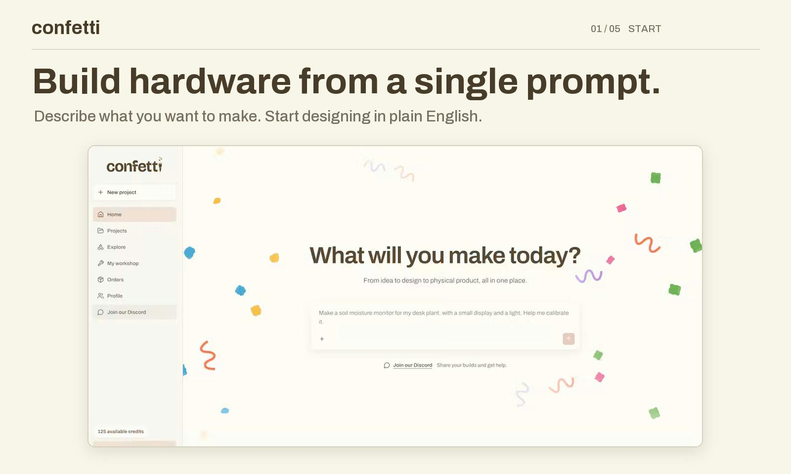
Publisher supplied image; editorial attribution; blanket reuse license not established
fabivo-photo-cutlist
Fabivo官方输出示例：家具板件的三维模型视图，未显示尺寸或完整编辑界面。 Official Fabivo output example: a 3D panel model view, without dimensions or the complete editor.
Source page · Original source
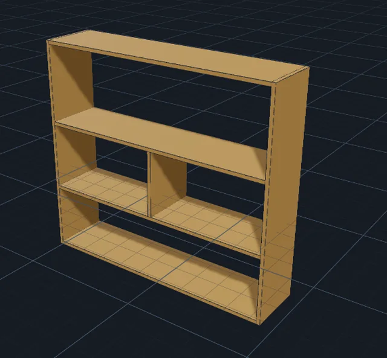
Official product screenshot for attributed editorial discussion; asset license not separately verified
zwift-plus-adaptive-coach
Zwift官方训练仪表盘，显示训练重点、每日目标与路线。 Official Zwift training dashboard showing focus, daily targets and routes.
Source page · Original source
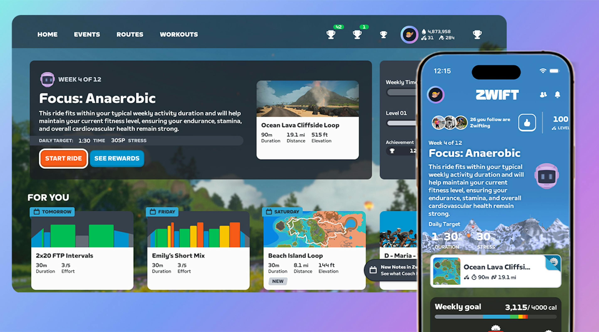
Publisher supplied image; editorial attribution; blanket reuse license not established
rokid-glasses2-preview-capture
Rokid提供、Wareable刊登的Glasses 2镜框与镜腿产品特写。 Rokid-supplied Glasses 2 frame and temple product close-up published by Wareable.
Source page · Original source
Publisher supplied image; editorial attribution; blanket reuse license not established
xreal-aura-open-orders
XREAL官方AURA眼镜与有线计算盒产品图。 Official XREAL AURA glasses and wired compute puck.
Source page · Original source
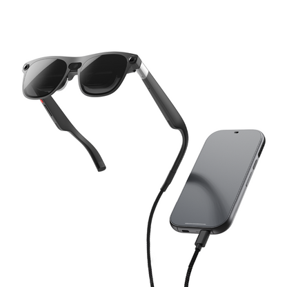
Publisher supplied image; editorial attribution; blanket reuse license not established
matic-stable181-maintenance
Matic官方维护演示静帧，打开顶盖可见水箱与集尘袋；并非Stable 181新提示截图。 Official Matic service-access demonstration frame showing the tank and bag under the open lid; not a screenshot of the new Stable 181 prompts.
Source page · Original source
Publisher supplied image; editorial attribution; blanket reuse license not established
vclip-local-video-clips
作者演示的本地视频、字幕轨和切片轨；画面中含第三方访谈素材。 Maker demonstration of local video with subtitle and clip tracks; contains third-party interview footage.
Source page · Original source
Maker screenshot in MIT source repository; third-party video imagery and promotional marks remain visible, no separate rights license for underlying footage verified. Editorial attribution.
ifttt-ai-agent-credits
IFTTT官方Create聊天界面，展示已连接的自动化与继续输入入口。 Official IFTTT Create chat showing a connected automation and the reply field.
Source page · Original source
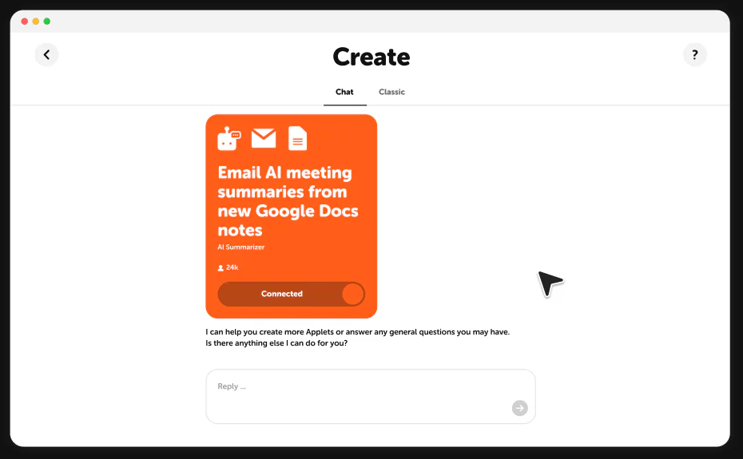
Official product/promotional documentation; retain attribution; no open reuse license established
stablegen-040
维护者制作的遮罩编辑演示画面：角色夹克的选择与三种文字修改示例，并非完整Blender操作界面。 Maintainer masked-edit demonstration showing a jacket selection and three example edits; this is not a full Blender interface capture.
Source page · Original source
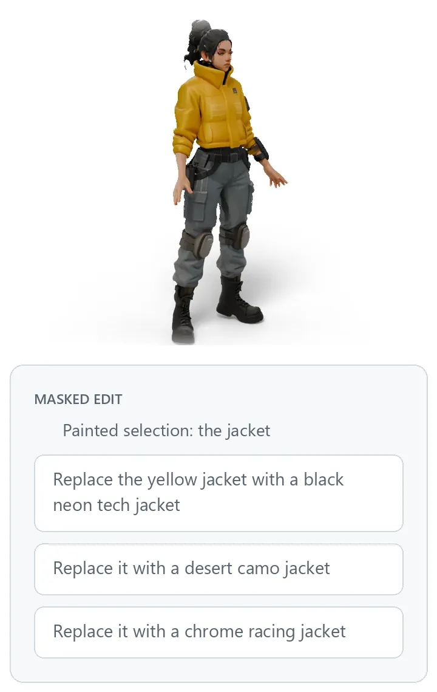
Official repository demonstration image; attributed editorial use; asset license not independently established
coucou-055
官方应用窗口截图，展示听写历史与记录入口。 Official application window with dictation history and recording controls.
Source page · Original source
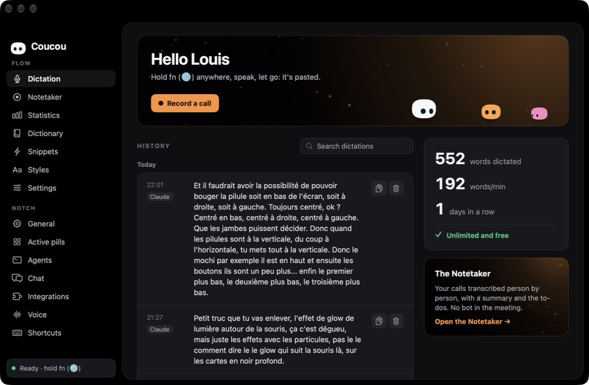
Official product screenshot; separate asset rights; attribution required
survival-llm-040
作者提供的回答与来源并排界面，说明资料核对入口；不是0.4版安装流程实测。 Author-supplied answer and source view illustrating document checking, not an editorial test of version 0.4 setup.
Source page · Original source
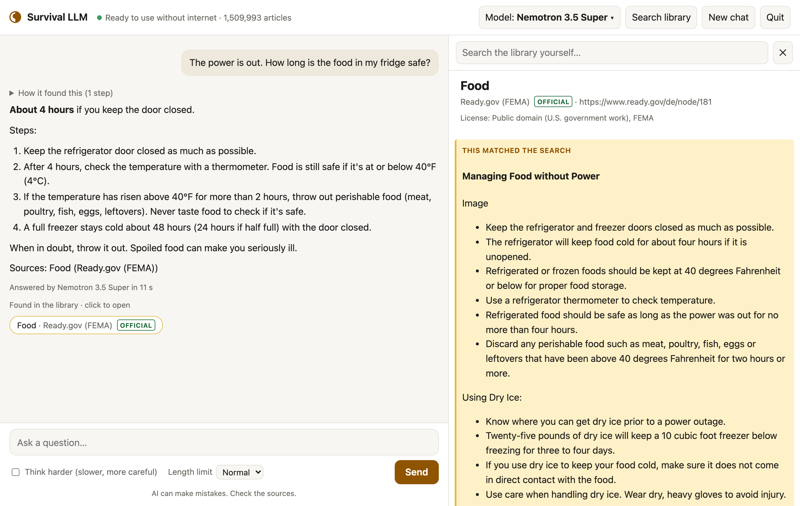
Author-supplied product screenshot; code MIT does not establish underlying library/screenshot reuse rights; attribution required
gemini-inline-file-editing
Google原文视频封面展示表格、图表和就地修改输入；已检查封面，未实测视频中的操作。 Google’s original demo cover shows a table, chart and inline edit prompt; the cover was inspected, not the demonstrated operation.
Source page · Original source
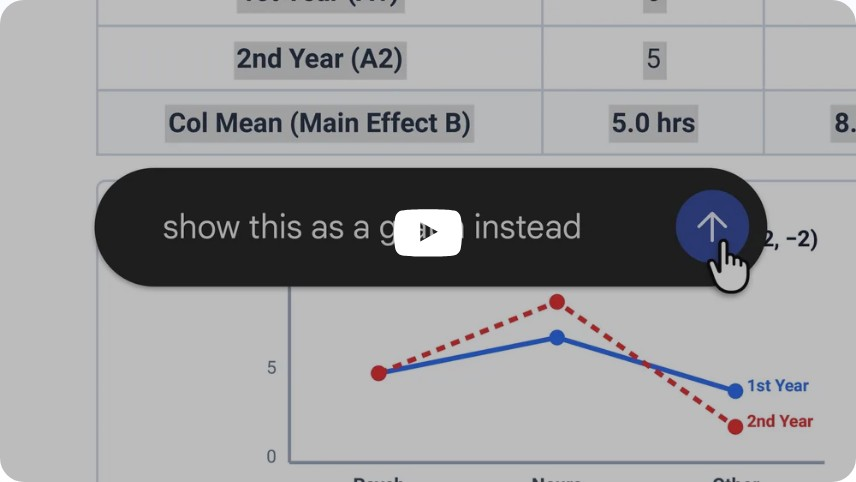
Official vendor visual for attributed editorial reference; no blanket reuse license established
floot-chatgpt-native-preview
Floot开发者提供的界面展示：ChatGPT对话旁直接预览生成的应用。 Maker-supplied Floot interface showing an app preview beside the ChatGPT conversation.
Source page · Original source
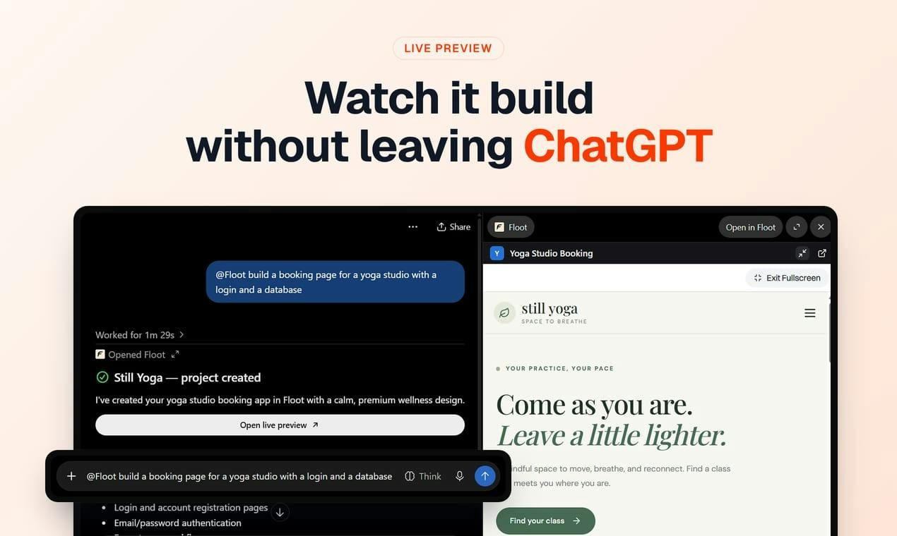
Official vendor visual for attributed editorial reference; no blanket reuse license established
weknora-090-assistant
官方界面：知识库旁的工作助手。 Official UI: the assistant beside a knowledge base.
Source page · Original source
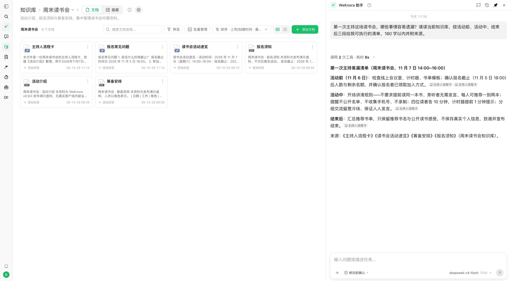
Tencent/WeKnora official repository screenshot; repository MIT label; third-party marks retained
github-replica-design-prototypes
GitHub官方Replica演示界面，展示为Issue列表增加筛选器的请求。 GitHub’s Replica demonstration shows a request to add a filter builder to an issue list.
Source page · Original source
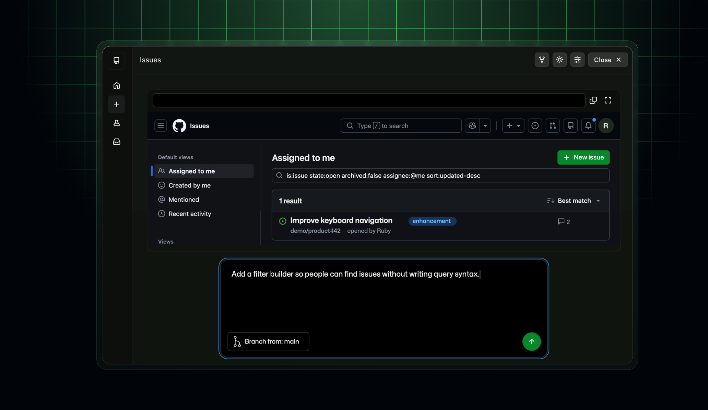
Official vendor visual for attributed editorial reference; no blanket reuse license established
copilot-pr-review-agent-merge
GitHub官方PR审查截图：审查档位与Copilot批准状态。 GitHub’s official PR review screenshot showing effort choices and Copilot approval.
Source page · Original source
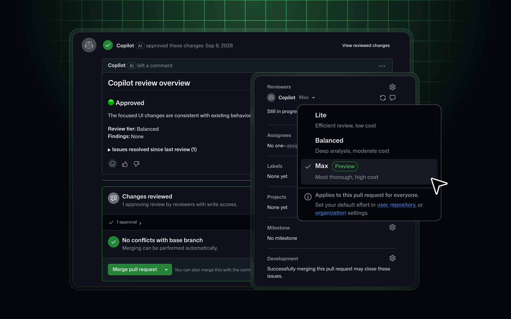
Official vendor visual for attributed editorial reference; no blanket reuse license established
intrascope2-shared-agent-controls
Intrascope官方工作区用量与项目仪表盘；示例数值不是经核实的客户效果。 Intrascope’s official usage and projects dashboard; sample numbers are not verified customer outcomes.
Source page · Original source
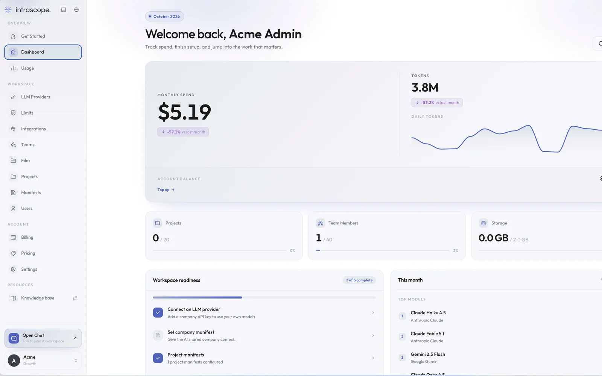
Official vendor visual for attributed editorial reference; no blanket reuse license established
radar-119
官方根据真实会话重放的终端示例，展示代理借助Radar读取集群信息。 Official replay of a real terminal session, showing an agent reading cluster context through Radar.
Source page · Original source
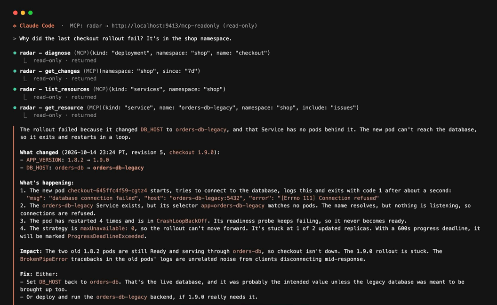
Official repository screenshot; caption must disclose replay
aws-step-functions-agent-tools
依据原始开发文档绘制的接口流程示意；非产品截图、未实际部署 Editorial interface flow based on original developer documentation; not a screenshot or deployed test
Source page · Original source
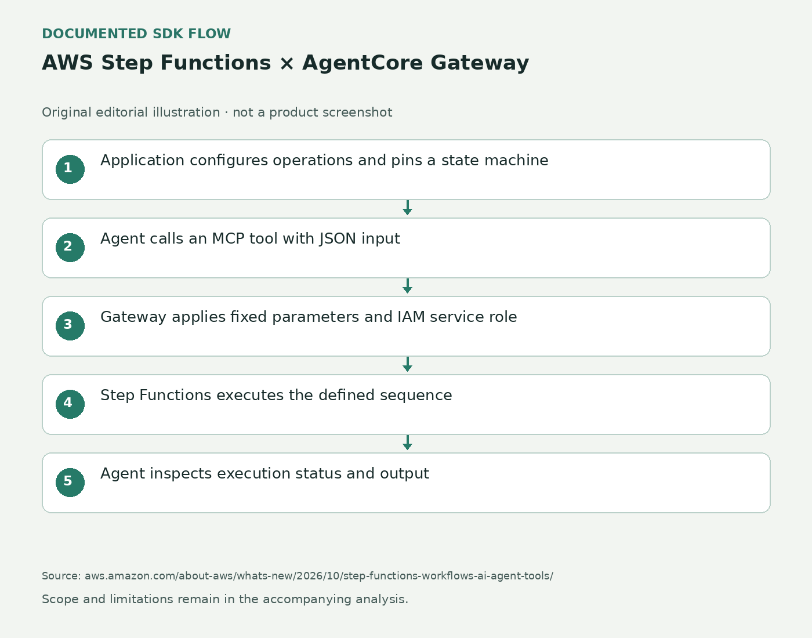
Original editorial diagram based on cited public source; no fabricated interface
foundry-copilot-harness-preview
依据原始开发文档绘制的接口流程示意；非产品截图、未实际部署 Editorial interface flow based on original developer documentation; not a screenshot or deployed test
Source page · Original source
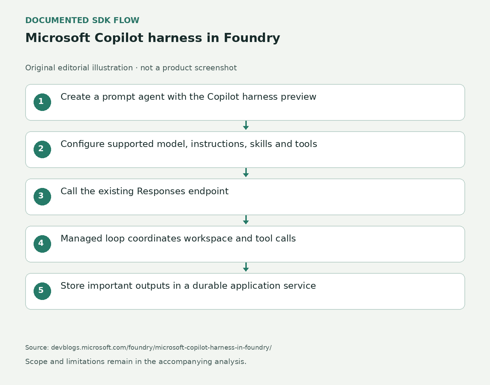
Original editorial diagram based on cited public source; no fabricated interface
mcode-stack-context-audit
官方技能分组图：这是可安装文本技能包，没有独立应用界面。 Official skill map: an installable text package without a standalone application UI.
Source page · Original source
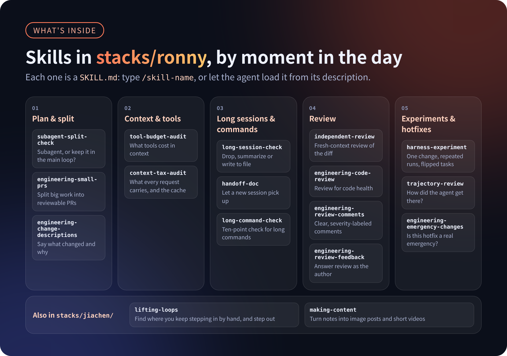
MiniMax Code team official repository diagram; repository MIT except noted adapted engineering practices
clover-block-diffusion
官方展示的API账户与token余额界面；不代表已获内测访问。 Official API account and token-balance interface; this does not establish granted beta access.
Source page · Original source
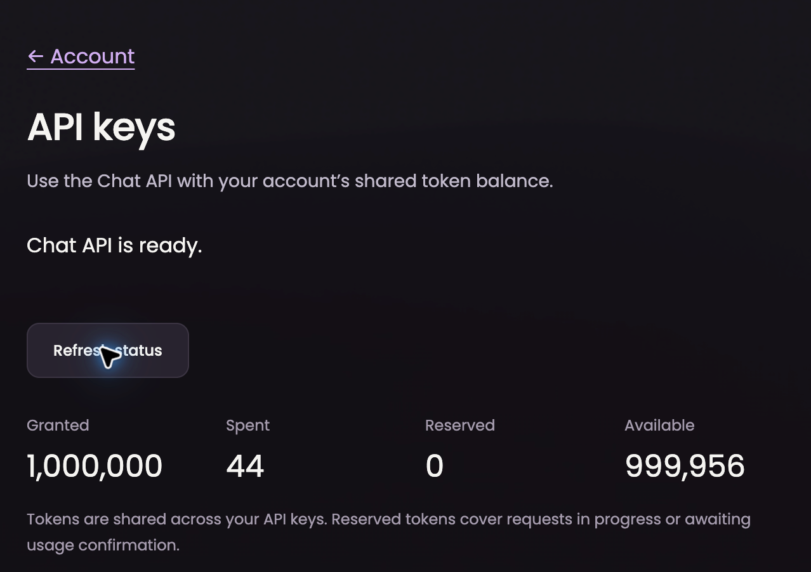
DiffuSpace original launch illustration/screenshot; editorial attribution, no blanket image reuse license verified
agibot-g2max-linku
智元官方G2 Max产品场景展示图，机器人拿取轮胎；不是独立工厂测试照片。 Official AGIBOT G2 Max product scene showing a robot holding a tire; not an independent factory-test photograph.
Source page · Original source
Publisher supplied image; editorial attribution; blanket reuse license not established
grasppressure
作者的摄像头压力估计演示：握杯调音量、研杵切换步骤与握卡确认；不同于力敏电阻实验。 Authors’ camera-based pressure demos: volume, recipe steps and card confirmation; distinct from the force-sensor experiment.
Source page · Original source
GraspPressure authors; arXiv CC BY-NC-SA 4.0; original research figure with attribution.
intera11y
论文图3：InterA11y的候选元素、确定性检查与代理取证流程。 Paper Figure 3: candidate elements, deterministic checks and agent evidence collection.
Source page · Original source
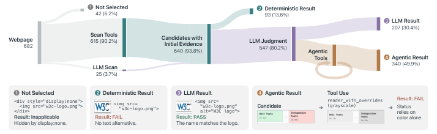
CC BY 4.0; credit paper authors
lookover
论文图1：左侧主题概览，右侧在评论编辑器上方提供三层提问的真实界面。 Paper Figure 1: topic overview and three levels of questions above the comment editor.
Source page · Original source
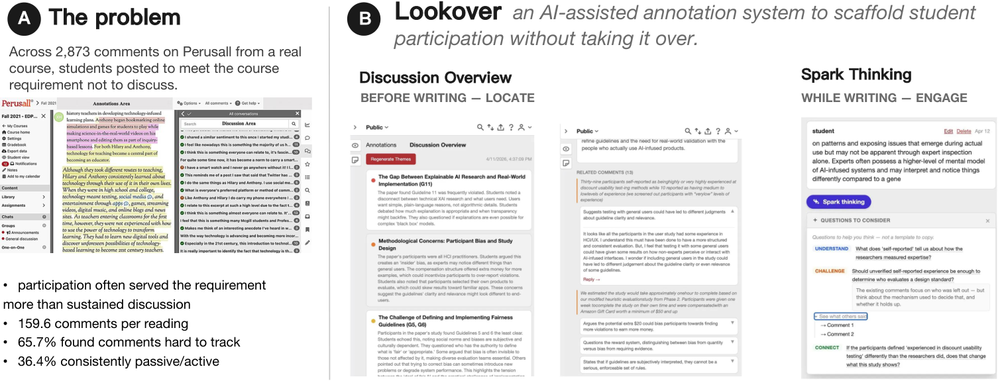
CC BY 4.0; credit paper authors
haidl-x
论文图1：请求、计算状态、AI回复和评估的记录生命周期；这是作者机制图，不是界面截图。 Paper Figure 1: request, computation, response and assessment lifecycle; an author mechanism diagram, not a UI screenshot.
Source page · Original source
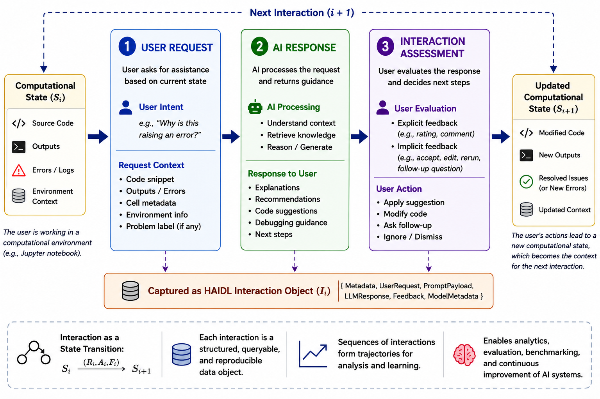
CC BY 4.0; credit paper authors
as-if-machine
论文补充图1：假设重力消失的实际写作界面；这是说明性场景，不是两项实验所用题材。 Supplementary Figure 1: the actual interface for a gravity-disappearance example, which was not used in either experiment.
Source page · Original source
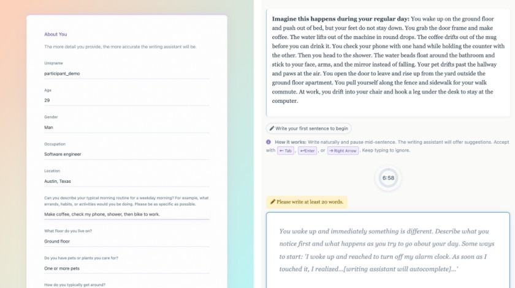
CC BY 4.0 paper; credit paper authors
adaptive-psychomotor-tutor
论文图1a：参与者使用油门和摇杆操作的二维四旋翼着陆模拟器。 Paper Figure 1a: the two-dimensional quadrotor landing simulator controlled with a throttle and joystick.
Source page · Original source
CC BY 4.0 paper (publisher placeholder copyright also appears); credit paper authors